Modelica Newsletter 2011-1
Newsletter #1 of 2011 (News from Modelica Association, from Modelica related projects and from Modelica tool vendors)
Table of Contents
- Letter from the Board
- Modelica Association News
- Educational News
- Collection of Solved Problems on Control
- Training course Modelica and SimulationX
- Dymola/Modelica courses by Modelon
- Modelica Course with OpenModelica
- OMWeb - Web-based Modelica Laboratory
- Project News
- Library News
- Libraries Updates from Modelon
- AlternativeVehicle Library released by DLR
- HumanComfort and Visualization Libraries updated
- SimulationX supports Interface to TNO Delft-Tyre
- Vendor News
Letter from the Board
Dear Modelica interested,
The Modelica Conference March 20-22 2011 in Dresden was very successful. With 316 participants, the conference had 45 % more participants than the last conference Modelica'2009. The number of papers remained roughly the same.
In Sept. 2010, the Modelica Association decided to work on two parallel development lines for Modelica:
- Modelica 3 line
Backwards compatible, smaller improvements and fixes of the Modelica language. Furthermore, extensions for synchronous control and state machines are being defined in order to facilitate model based systems development including embedded control. The next version, Modelica 3.3, is expected for end of 2011 or beginning of 2012. - Modelica 4 line
In parallel to the Modelica 3 line, work on Modelica 4.0 started. The goal is to simplify Modelica considerably (via a kernel language with new data structures and a kernel library that implements some of the current language elements), and at the same time make it more powerful. It might be that some of the changes will not be backwards compatible (but then automatic translation of models to Modelica 4 will be provided). Modelica 4.0 is planned for end of 2012 or beginning of 2013.
In order to improve the operation of the Modelica Association, in Dec. 2010 new "committee members with particular duties" have been introduced and the following persons have been elected for these positions:
- Marketing: Hubertus Tummescheit (Modelon AB, Sweden)
- Quality and Processes: Kilian Link (Siemens AG, Germany)
The bylaws of the Modelica Association (MA) were changed on May 23, 2011. The most important changes were:
- Organizational members get voting rights: An organizational member has to appoint an individual person affiliated with the organization to represent the organization in all matters related to MA. This person has voting rights.
- The board of the Modelica Association can have up to 5 additional board members.
- The quorum for MA assembly meetings has been changed from 6 to 9 persons (so at least 9 MA members must be present, one of whom must be the Chairperson or Vice-Chairperson, in order that decisions can be performed).
The Functional Mockup Interface standard is becoming more and more a standard export interface of Modelica tool vendors: AMESim, Dymola, JModelica, MWorks, and SimulationX support the export of Modelica models in FMI for Model Exchange 1.0 in binary format. These models can then be imported in tools like Atego Ace, Matlab, Python, Silver, Simulink, SIMPACK and in Modelica tools as well (see here for the complete list ). FMI development is on-going: FMI 2.0 for Model Exchange and for Co-Simulation is planned for end of 2011.
The Modelica Association board member Michael Tiller has left his previous company and is now working for Dassault Systèmes U.S.A., and from Aug. 2011 on, at Dassault Systèmes in Paris.
If you have interesting news for the Modelica community, please contact the newsletter editor (Michael Tiller) for information on how to submit newsletter articles for possible inclusion in the next newsletter. The deadline for articles for the next newsletter is Oct. 1, 2011.
Best wishes from the Board of the Modelica Association:
Martin Otter, Chairman (DLR Germany)
Peter Fritzson, Vice-Chairman (Linköping University, Sweden)
Michael Tiller, Secretary (Dassault Systèmes, U.S.A.)
Hilding Elmqvist, Treasurer (Dassault Systèmes, Sweden)
Modelica Association News
Modelica'2011
The 8th Modelica Conference took place in Dresden, March 20-22, 2011. It was organized by Fraunhofer IIS/EAS and the Modelica Association. Here are some highlights:
- Number of participants: 316 from 23 countries
- Number of papers in the proceedings: 76 (oral) + 23 (poster) = 99
- Number of tutorials: 8
- Number of exhibitors: 15
- Two keynotes:
Peter Schwarz (Fraunhofer IIS/EAS, Germany): Requirements for the Simulation of Complex Heterogeneous Systems,
Scott A. Bortoff (Mitsubishi Electric Research Laboratories, U.S.A.): A Decade of Industrial-Strength Modelica Use and Future Challenges
All material of the conference, including the proceedings, are available online. The proceedings will also become available from Linköping University Press in form of online proceedings (with guarantees of integrity and persistence).
This article is provided by Christoph Clauss (Fraunhofer) and Martin Otter (DLR-RM)
OpenModelica'2011
The 3rd OpenModelica Annual Workshop, organized by the Open Source Modelica Consortium was held successfully in Linköping, Sweden, on February 7, 2011. The workshop was attended by approximately 50 people from industry and academia. New results and applications regarding the OpenModelica platform were presented. The program and the presentations are available from www.openmodelica.org.
This article is provided by Peter Fritzson (Linköping University)
4th EOOLT Workshop Sept 5
The 4th Workshop on Equation-Based Object-Oriented Modeling Languages and Tools, EOOLT'2011, will take place in Zürich, Sept 5, 2011. See EOOLT'2011
During the last decade, integrated model-based design of complex cyber-physical systems (which mix physical dynamics with software and networks) has gained significant attention. Hybrid modeling languages based on equations, supporting both continuous-time and event-based aspects (e.g. Modelica, SysML, VHDL-AMS, and Simulink/ Simscape) enable high level reuse and integrated modeling capabilities of both the physically surrounding system and software for embedded systems. The EOOLT workshop addresses the current state of the art of such equation-based object-oriented (EOO) modeling languages, as well as open issues that currently still limit their expressiveness, correctness, and usefulness. Moreover, integration of and comparison with related approaches and languages, such as actor oriented, synchronous, and domain specific languages, are of particular interest.
Submission
Researchers and practitioners are invited to submit full-length papers (up to 10 pages) for consideration by the program committee. Papers are welcome that offer presentations and discussions of existing languages and tools, their capabilities and limitations; reports on practical experience; demonstrations of languages, tools, ideas, and concepts; positions related to relevant questions; and discussion topics. If a paper has been accepted, the authors should present the paper at the workshop and also have the paper published in electronic proceedings (and a local conference paper version) at Linköping University Electronic Press
Important Dates
Submission deadline: June 5, 2011
Author notification: June 22, 2011
Camera-ready: August 15, 2011
Workshop: Sept 5, 2011
Organizing Committee
- François E. Cellier (Chair), ETH Zürich
- David Broman (Co-Chair), Linköping University
- Peter Fritzson (Co-Chair), Linköping University
- Edward A. Lee (Co-Chair), U.C. Berkeley
This article is provided by Peter Fritzson (Linköping University)
Modelica 15th Anniversary Celebration
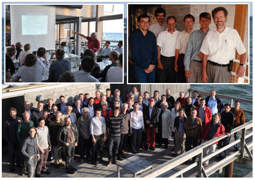
The development of the Modelica language started in 1996. In order to celebrate 15 years of Modelica development, Dassault Systèmes, Lund invited the participants of the 71st Modelica Design Meeting, as well as some Modelica contributors, for dinner at a nice location at the Swedish coast close to Lund. Karl Aström, Hilding Elmqvist, and Peter Fritzson, gave presentations about the early history of the Modelica development.
The large photo to the right shows the "Modelicans" at the celebration, the upper left photo shows Karls' presentation, and the upper right photo shows the participants at the first Modelica meeting in 1996 (from left: Martin Otter, DLR; Alexandre Jeandel, Gaz de France; Per Sahlin, Brisdata/Equa; Sven Erik Mattsson, Lund University/Dassault Systèmes; Bernt Nilsson, Lund University; Hilding Elmqvist, Dynasim/Dassault Systèmes).
This article is provided by Hilding Elmqvist (Dassault Systèmes AB, Lund) and Dag Brück (Dassault Systèmes AB, Lund)
Educational News
Collection of Solved Problems on Control
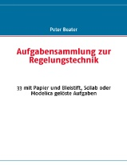
This books presents 33 problems for a first course in control systems. It shows how they can be solved by pen and paper to increase the student's understanding of the linear theory. For a number of problems a Modelica model is developed to give a a numerical solution. When applicable the results of the linear model are compared with those of a non-linear Modelica model to show the strength or weakness of the respective approach.
The book is intended for students and engineers of mechanical engineering and complements an earlier textbook on control and simulation by the author.
The author contributed to early versions of Modelica libraries. He has been teaching control, modelling and simulation for more than ten years at the faculty of Mechanical Engineering and Automation in Soest/Germany.
Aufgabensammlung zur Regelungstechnik. 33 mit Papier und Bleistift, Scilab oder Modelica gelöste Aufgaben. P. Beater. Books on Demand, Norderstedt. 2011, ISBN 978-3-8423-3560-8.
This article is provided by Peter Beater (Fachhochschule Südwestfalen)
Training course Modelica and SimulationX
A new training course for "Modelica and SimulationX" is offered in a cooperation by ITI GmbH and BAUSCH-GALL GmbH in German Language, see
http://www.bausch-gall.de/semi.htm
This article is provided by Ingrid Bausch-Gall (BAUSCH-GALL GmbH)
Dymola/Modelica courses by Modelon
This five-day course is a comprehensive and unified introduction to the modeling and simulation capabilities of Dymola and Modelica. It gives you a flying start in your productivity, take the full course at once, or divide it into two occasions. The course overview (pdf) gives more information about the content. See www.modelon.com/training for further information. In addition, Modelon offers custom courses, and on-demand courses at the customer site world-wide.
Currently, the following occasions are scheduled.
|
May 10-12, 2011 |
||
|
September 5-7, 2011 |
Gothenburg |
|
|
September 8-9, 2011 |
Gothenburg |
|
|
November 21-23, 2011 |
Lund |
|
|
November 24-25, 2011 |
Lund |
|
|
February 6-8, 2012 |
Gothenburg |
|
|
February 9-10, 2012 |
Gothenburg |
This article is provided by Hubertus Tummescheit (Modelon AB) and Johan Andreasson (Modelon AB)
Modelica Course with OpenModelica
A five day Modelica course using OpenModelica will be organized in September at Linköping University, Sweden. Contact Peter Fritzson (peter.fritzson@liu.se) if you are interested in attending. Participants from both industry and academia are welcome. The course will be given in English.
This article is provided by Peter Fritzson (Linköping University)
OMWeb - Web-based Modelica Laboratory
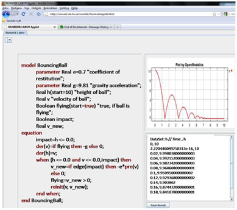
OMWeb is a web-based teaching environment useful both in engineering courses as well as for teaching programming languages (see http://openmodelica.org/index.php/developer/tools/172). The student needs only to open a web browser and start writing programs in order to use the tool. Moreover with the introduction of ECS server the frontend and backend are decoupled thus making the system more flexible and the communication easier.
OMWeb 3-layer architecture:
- (SC,TC) Student and Teacher Client, Java applet
- (ECS) E-learning Community, Ruby on Rails
- (CC) Computation Client, C++
Communication:
- (REST) ReprEsentational State Transfer, standard over HTTP
- (JSON) JavaScript Object Notation string as data carrier type
OMWeb Interface for Students: http://omweb.ida.liu.se/StudentClient/StudentClient.html
This article is provided by Peter Fritzson (Linköping University)
Project News
Modelica Based Simulator for Automation Lifecycle
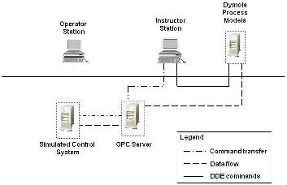
Modeling and simulation are widely used for various purposes such as design, engineering, operator training, development and evaluation of operation and control strategies. Dynamic simulators are useful in training the plant operators in various operational aspects of the plant. Well trained staff can reduce risks associated with handling of abnormal situations and also reduce the time for startup and shutdown leading to increased production and less off-specification product.
Use of object oriented approach for developing simulation models offers flexibility in adopting or extending the models for different process applications. Modelica models for training simulator application are developed using simulation tool Dymola. Hierarchical approach is followed while developing the simulator models for recovery boiler in a pulp mill. At the lowest hierarchy, first principles model of recovery boiler components like furnace, economizer, superheater, attemperator and steam drum are modeled which are used to build the recovery boiler model at the higher hierarchy. Further, the recovery boiler model is linked with pre-heaters, tanks etc to conceive the recovery boiler flowsheet model.
High fidelity simulation model of recovery boiler is used as a virtual plant to replace the physical signals from field instruments. The plant control applications residing in real controllers are replaced by simulated control system. Communication interface between virtual plant and simulated control system is developed for data and command transfer. User friendly GUI is developed for managing functionalities of the training simulator.
Dymola executes the process models in real time and it provides a DDE (Dynamic Data Exchange) server for communication with external applications. A simulated control system can be used to execute the plant control strategies in real time, faster/slower than real time and also to freeze controller actions. The developed interface enables communication between DDE server of Dymola and OPC server of simulated control system. An instructor station is developed that controls the execution of the training simulator by command (start, stop, freeze of simulator) transfer and by generating fault scenarios in the virtual plant to train the operators.
For further details please contact tarun.mathur@in.abb.com.
This article is provided by Tarun Mathur (ABB - India)
MODPROD'2011
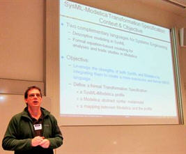
The 5th international MODPROD Workshop on Model-Based Product Development, organized by the MODPROD competence center at Linköping University, was successfully held at Linköping University, Linköping, Sweden, February 8-9, 2011. The workshop was attended by over 100 people from industry and academia. Six tutorials were held in the morning the first day. The research session was started by a keynote by Jeannie Falcon followed by research presentations. The second day started by keynote presentations by Bran Selic, Chris Paredis, and Francesco Casella. A number of interesting research and industry presentations were held on modeling technology and applications, both hardware and software modeling, and combined. The program and the presentations are available from www.modprod.liu.se .
This article is provided by Peter Fritzson (Linköping University)
Library News
Libraries Updates from Modelon
Modelica Interface to TNO Delft Tyre
Modelon has developed a Modelica interface to the TNO Delft-Tyre models library. The Delft-Tyre Interface has been presented in the last newsletter, and is now available for both Dymola and SimulationX. More information is found in this newsletter further down the page.
AirConditioning Library 1.8
The most important update is that the properties for the new refrigerant R1234yf have been added, are more accurate than the previous, propriatary version and are now available to anyone without restrictions from patent holders of R1234yf.
Vehicle Dynamics Library 1.5
Some of the highlights in version 1.5 are:- Enhanced support for steady state and quasi steady state driving situations, e.g. cornering, corner entry and exit, and braking.
- Improved table based suspensions that capture coupling effects between bump and steer, as well as steering system forces.
- Improved configurability of suspensions, with extended support to conveniently change mount points, as well as adding shims and other tuning elements.
This article is provided by Hubertus Tummescheit (Modelon AB)
AlternativeVehicle Library released by DLR
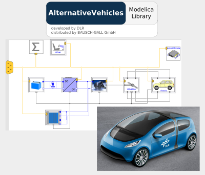
The focus of the AlternativeVehicles library is on modeling of alternative power trains with emphasis on fast and simple parameterization of component models by using commonly available manufacturer datasheets and measured data. It contains ready-to-use vehicle architectures including battery electric vehicles, range extender vehicles and fuel cell vehicles as well as component models for electric drives, energy storages, fuel cells, engines, drivers and drive cycles. In addition the library includes many energy storage, electric drive and fuel cell models readily parametrized with real world product data for different power ranges.
The AlternativeVehicles Library was developed within the European research project EUROSYSLIB. The models are based on the VehicleInterfaces library ensuring compatibility to already existing automotive libraries. The modular approach allows the user to develop its own vehicle architectures and enables easy replaceability of components.
The library was developed by DLR, German Aerospace Center, Institute of Vehicle Concepts, Stuttgart, Germany (www.dlr.de/fk) with contributions of Institute of Robotics and Mechatronics, Oberpfaffenhofen, Germany
This library is availble from BAUSCH-GALL GmbH (http://www.bausch-gall.de/al1.htm)
This article is provided by Ingrid Bausch-Gall (BAUSCH-GALL GmbH)
HumanComfort and Visualization Libraries updated
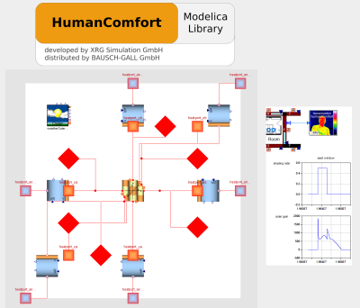
The HumanComfort Library is developed by XRG Simulation GmbH for use in automotive, aircraft and building simulation. Version 1.1 of this library contains new and improved models for shading, 2D/3D heat conduction, clouding and atmospheric longwave radiation. Another new feature is CO2 tracing including the emission of occupants. For more information see HumanComfort Library at our homepage.
The Visualization Library is developed by DLR for model-integrated offline and real-time visualization. Version 1.1 of this library contains new components for interactive user interfaces, like buttons and sliders. A new component for collision detection is available. For more information see Visualization Library at our homepage.
Our range of Modelica Libraries is available at
http://bausch-gall.de/molib.
If you need more information, please contact
info@bausch-gall.de.
This article is provided by Ingrid Bausch-Gall (BAUSCH-GALL GmbH)
SimulationX supports Interface to TNO Delft-Tyre
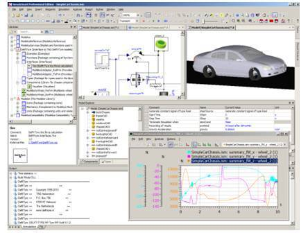
CAE specialist ITI GmbH announces the support of the Modelica interface to TNO’s Delft-Tyre in its multi-domain software platform SimulationX. The extensively validated Delft-Tyre standard is the reference implementation of Pacejka’s renowned Magic Formula and comprises the MF-Tyre and the MF-Swift tire models. It is widely used in the automotive and aerospace industries.
- Besides arbitrary “fixed” roads the library also features an interface to moving roads for vehicles on a four-poster test bench.
- The Delft-Tyre is connectable to elements from the MultiBody Library of the Modelica Standard library and can also easily be connected to SimulationX MBS library elements using connector compatibility elements.
- The Delft-Tyre Interface is available for both SimulationX
3.4 32 bit and 64 bit.
A Modelica Interface to the Delft-Tyre Library was developed by Modelon
and validated for SimulationX platform in a cooperation of Modelon AB
and ITI GmbH.
For further information, please contact sales@simulationx.com or visit
www.simulationx.com
*Figure:
Presentation of Modelon (Edo Drenth, Magnus Gräfvert) to
“TNO Delft-Tyre in Modelica” during 8th Modelica
Conference in Dresden, March 2011
This article is provided by Manuela Joseph (ITI GmbH)
Vendor News
MathCore - a Wolfram Company
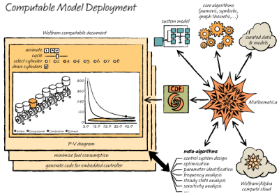
Wolfram Research, developer of Mathematica and Wolfram|Alpha, has acquired MathCore Engineering AB. MathCore develops the modeling and simulation tool MathModelica as well as consultancy solutions based on Modelica. Wolfram’s acquisition of MathCore is an important step in their strategic direction in the engineering-related market.
Already today MathModelica models can currently be directly imported into Mathematica, where a full suite of analysis tools is available. Models can be symbolically analyzed, for example using sensitivity analysis or parameter optimization. A model can be used for control design with Mathematica’s built-in control system functionality. Measurement data can be imported to Mathematica and used to validate models, identify parameter values, and so on. Models can be simulated, visualized, and interactively manipulated. Furthermore, with Mathematica’s document-centered interface, all experiments, analysis, visualization, and interactive manipulation can be brought together in a single notebook document that can be used for reporting and presentation.
The aim is to incorporate the MathCore technology further into the Wolfram product family and use the extensive symbolic computating capabilities in Mathematica, to take this modeling and analysis approach to a whole new level, including performance, scale, or high-level automated analysis. Furthermore MathCore’s consultancy branch will be further developed to offer modeling and simulation solutions based on Modelica.
For more information and background, see Stephen Wolfram’s blog post: “Launching a New Era in Large-Scale Systems Modeling”.
This article is provided by Jan Brugard (MathCore)
JModelica.org 1.5
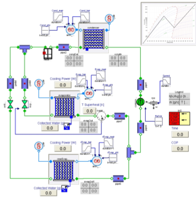
JModelica.org is an extensible Modelica-based open source platform for optimization, simulation and analysis of complex dynamic systems. The main objectives of the project are to create an industrially viable open source Modelica environment, while offering a flexible platform serving as a virtual lab for algorithm development and research. JModelica.org also provides a platform for technology transfer where industrially relevant problems can inspire new research and where state of the art algorithms can be propagated from academia into industrial use.
JModelica.org 1.5 at a glance:- Functional Mock-up Unit (FMU) export
- Extended Modelica compliance in the compiler front-end
- Equation sorting and BLT
- Symbolic solution of simple equations
- Improved simulation support for hybrid and sampled systems
- Improved DAE initialization with Kinsol and SuperLU
- Improved support for external functions
JModelica.org is compliant with the standard Functional Mock-up Interface for Model Exchange, and both import and export of Functional Mock-up Units (FMUs) is now supported in JModelica.org. The import feature can be used also with large scale FMUs from other FMI compliant tools such as Dymola and SimulationX, with simulation performance on par with what can be achieved natively with such tools. See the paper Import and Export of Functional Mock-up Units in JModelica.org for additional details.
The FMU import and export functionality in JModelica.org is easily accessible in the form of well tested and documented Python classes and functions. Simulation results are retrieved as Numpy arrays and can be analyzed, processed and visualized using standard Python functions. The figure shows the model TwinEvaporator from the Air Condition Library, which has been used as a benchmark model when simulating Dymola-generated FMUs with JModelica.org's Python-based FMU import.
This article is provided by Johan Akesson (Lund University)
Modelica Physical Modeling Toolbox for Matlab and Simulink
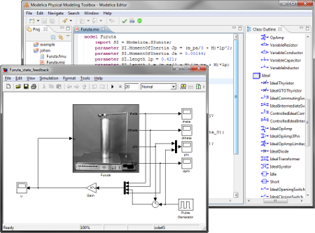
Modelon launches the Modelica Physical Modeling Toolbox for Matlab and Simulink. This Modelica toolbox enables powerful physical modeling for MATLAB®/Simulink® users. The toolbox is based on the Modelica language and targets multidomain modeling and simulation of physical systems. The Modelica compiler supports a rapidly growing subset of the Modelica language and is ideal for plant modeling in control system development. Modelica models can be simulated both with MATLAB®'s command line integrators and as blocks in Simulink®. Supported MATLAB® releases are 2007a to 2010b. A large subset of the free Modelica Standard Library is included in the toolbox.
The Toolbox consists of three independent components:
- An intelligent Modelica Editor, with syntax highlighting, browsing of model libraries and model error checking. The editor compiles models into FMI compliant binary models (called FMU's henceforth) that can be exported to any tool which is compliant with FMI for model exchange version 1.0.
- Import of FMU into MATLAB®, for integrating them with MATLAB®'s command lines intergators.
- Import of FMU into Simulink®, in order to extend Simulink into the physical modeling domain.
The toolbox uses the FMI standard for model exchange for the exchange of dynamic models in binary format as its native binary interface. The format is an open industrial standard and supported by a quickly expanding list of tools. The toolbox can therefore also be used to import FMI-compliant models from any other compliant tool into MATLAB®/Simulink®. Interested users can download a free evaluation version from the product homepage during the ongoing beta period.
This article is provided by Hubertus Tummescheit (Modelon AB)
Converge for Version Control of Modelica
At the 8th Modelica Conference in Dresden the presentation "Effective Version Control of Modelica Models" from Peter Harman introduced the tool Converge from deltatheta.
Converge is a dedicated version control and history analysis tool for Modelica models. It enables the user to understand changes in the structure, dependencies and resulting variables and equations for their models, by comparison of versions in a number of views.
Converge enables you to:
- Determine if and how your model variables and equations have changed
- Access project models and parameters for any given date or revision
- Find out which models yours relies upon and therefore which will affect yours if changes are introduced
- Find out which models depend upon yours and explore the potential impact of changes
- Separate changes that affect the model results from those that don't
- Maintain models with consistent behavior and robust libraries with backwards-compatibility
For further information please see http://www.deltatheta.com/products/converge/
This article is provided by Peter Harman (deltatheta)
OpenModelica 1.7 - Optimization and GUI
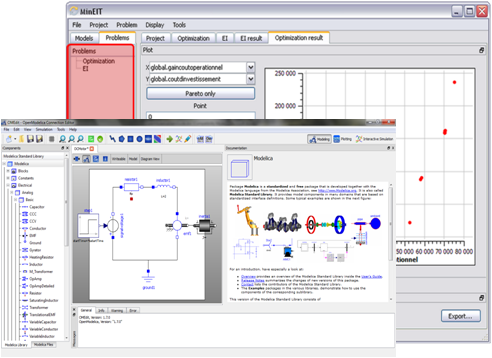
OPENMODELICA IS AN OPEN-SOURCE model-based cyber-physical mathematical modeling, architectural description and simulation environment intended for industrial and academic usage. Its long-term development is supported by a non-profit organization – the Open Source Modelica Consortium (OSMC). (see www.openmodelica.org).
The OpenModelica 1.7 release includes the following highlights:
- A new optimization subsystem called OMOptim has been added to OpenModelica. Parameter optimization using genetic algorithms is supported in this version. Pareto front optimization with multiple objectives is also supported.
- Improvements in the OpenModelica graphical model connection editor OMEdit, supporting easy-to-use graphical drag-and-drop modeling. This includes support for icon editing, faster 2D plotting, integration between OMEdit and OMNotebook with model copy/paste, interactive on-line simulation, syntax highlighting, and flat model viewing.
- A new performance analyzer/profiler for equation-based models that highlights possible sources of slow computational performance.
- Better simulation support for the Modelica Standard Library 3.1, except Media and Fluid.
- Progress in supporting the Modelica.Media library, several models now flatten.
- Faster simulation of many models through more efficient handling of alias variables, binary output format, and faster event handling.
- Faster and more stable simulation through improved event handling, which is now default.
- Simulation result storage in binary .mat files, and plotting from such files.
- Support for Unicode characters in quoted Modelica identifiers, including Japanese and Chinese.
This article is provided by Peter Fritzson (Linköping University)
Dymola 2012
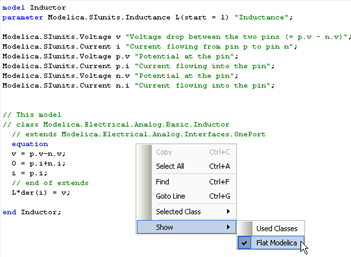
Dassault Systèmes is happy to announce that Dymola 2012 is available. The main highlights are:
- Enhanced model inspection to see inherited contents.
- Improved plotting (customization of appearance).
- Export to FMI for co-simulation (exports simulation module with integrated numeric solver).
- Support for Modelica 3.2 and Modelica Standard Library 3.2.
- Dymola 32/64-bit application to manage larger simulation results and table data sets.
For more details, see http://www.dymola.com
This article is provided by Dag Brück (Dassault Systèmes AB, Lund)
In this Newsletter, the following registered trademarks are referenced:
AMESim® is a registered trademark of LMS International.
Dymola® is a registered trademark of Dassault Systèmes AB.
MATLAB® and Simulink® are registered trademarks of The MathWorks Inc.
Modelica® is a registered trademark of the Modelica Association.
SimulationX® is a registered trademark of ITI GmbH.